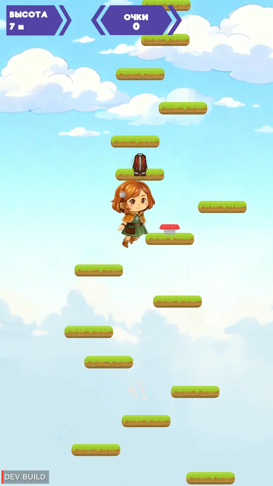

Разделяю код по задачам
Отделяю интерфейс от игровой логики и обмена с устройствами. Так можно менять экраны, правила игры или протокол, не переписывая всё приложение.
РАЗРАБОТЧИК / СТАВРОПОЛЬ
Игры, приложения
и работа с оборудованием.
Восемь проектов — от аркадных игр до инструментов для разработчиков.
На этом устройстве 3D-сцена недоступна. Все проекты можно посмотреть в списке.
Перейти к проектамРАЗРАБОТЧИК ИГР И ПРИЛОЖЕНИЙ
Разрабатываю игры для аркадных автоматов и веба, пишу настольные приложения и связываю их с оборудованием. Здесь собраны мои проекты с описаниями и исходным кодом.

DANRO JUMP / UNITYпроектов
в портфолио
коммерческого опыта
на сентябрь 2026
Игры
Настольные приложения
Оборудование
01 / ПРОЕКТЫ
В карточках — кратко.
Внутри — подробности и технологии.
02 / ПОДХОД
Отделяю интерфейс от игровой логики и обмена с устройствами. Так можно менять экраны, правила игры или протокол, не переписывая всё приложение.
Устройство может отключиться, настройки — повредиться, а обновление — прерваться. Для таких случаев добавляю переподключение, откат и логи, чтобы разобраться в ошибке.
Использую тесты и симуляторы оборудования: проверяю обмен сообщениями, переходы между состояниями и работу игровых сервисов без подключения к реальному автомату.
03 / ОБО МНЕ
Ставрополь, Россия
Python · C# · Unity · Godot
Я разработчик из Ставрополя. Пишу на Python и C#, делаю игры на Unity и Godot.
Часть моих проектов связана с реальными устройствами: аркадными автоматами, контроллерами и светодиодными панелями. В них работаю с интерфейсом, протоколами обмена и восстановлением после ошибок соединения.
Для настольных приложений использую PySide6, а также TypeScript, React и Electron. В портфолио есть и игры, и приложения для оборудования, и инструменты, которые помогают их разрабатывать.
04 / СВЯЗЬ
Можно обсудить работу, задать вопрос
о проекте или просто познакомиться.